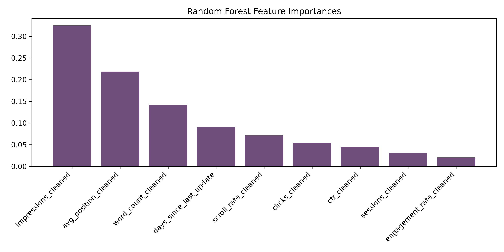
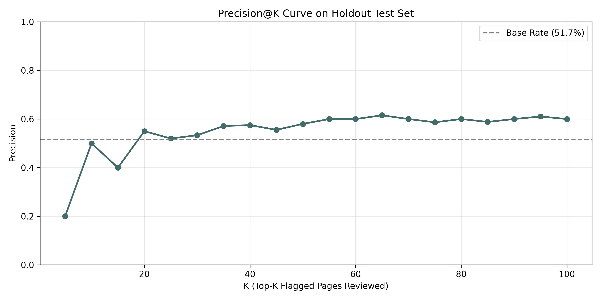

Content editors and SEO managers face resource constraints when deciding which of thousands of web pages to refresh to recover search traffic. We model this Content Refresh Prioritization problem as a Ranking and Scoring task, training a Random Forest Classifier on a public-safe dataset of 30,000 pages spanning 32 clients. To evaluate generalization honestly, we implement a client-holdout split design to ensure client pages never overlap between training and testing. The model achieves a Precision@50 of 0.540 and ROC-AUC of 0.611, representing a 1.9x improvement in precision over a deterministic baseline rule (Precision@50 = 0.280). This model outputs a prioritized review queue that reduces false positives, helping editorial teams optimize content maintenance budgets.
1. Introduction / Problem Statement
In organic Search Engine Optimization (SEO), content portfolios experience natural traffic decay. Shifts in user search intent, changes in search engine ranking algorithms, and competitor updates eventually erode a page's visibility. Search teams frequently struggle with content maintenance prioritization: with inventories containing thousands of URLs, which specific pages should receive editing hours or rewrite budgets?
A static heuristic, such as refreshing all pages older than 180 days, is too crude. Our starter dataset reveals that only 0.58% of pages are older than 180 days, yet 54.21% of pages are declining. In addition, search metrics have complex, non-linear relationships; click-through rate (CTR) is highly dependent on a page's average position tier. A flat threshold fails to separate expected CTR decay from genuine underperformance. An ML approach is required to automatically learn these interaction boundaries.
A wrong recommendation carries direct operational costs:
- False Positives (Type I Error): Wasted writer hours and content budgets (typically $100-$300 per page) spent rewriting healthy articles, with the added risk of disrupting stable search indexes.
- False Negatives (Type II Error): Unnoticed, compounding traffic erosion that harms organic lead generation and client revenue.
2. Data & Safety
We utilized the gated Hugging Face warehouse fact table: fact_content_daily_performance (specifically the mid-panel partition March 2026, spanning 2026-03-01 to 2026-03-31). This release contains 9,841,378 rows of daily data across 55 clients and 331,437 content items. GA4 engagement tracking is available for 4.21% of rows.
For modeling, the time panel was divided relative to the prediction boundary:
| Window | Calendar Range | Purpose | Associated Features |
|---|---|---|---|
| Early Feature Window | March 1–20, 2026 | Feature aggregation | imp_early, clk_early, pos_early, ctr_early, ses_early |
| Late Outcome Window | March 21–31, 2026 | Label generation | Daily average impressions (for target computation) |
Exclusion and Public Safety Boundary
To maintain strict public safety, all client and content identifiers are pseudonymous hashes. No customer names, brand-identifying domains, raw search query strings, or physical URLs are present.
We deliberately exclude outcome-period visibility metrics (e.g. imp_late) and pre-calculated trend features (like trend_direction or trend_pct in the GSC data slice) from our feature space. Including them represents direct **target leakage**, which artificially inflates model training metrics while rendering the model completely non-functional when deployed in production.
3. Methodology
We frame content refresh prioritization as a **Ranking and Scoring** task. Instead of outputting a simple binary "yes/no" tag, the model outputs a continuous decline-risk probability. Pages are sorted by this risk score, allowing editors to review the highest-opportunity candidates first.
Model Architecture & Features
We select a Random Forest Classifier (100 estimators, max_depth=8). Tree-based ensembles are naturally robust to missing data and skewed distributions, and they capture non-linear feature interactions (such as the expected CTR curve across position tiers) without requiring extensive manual feature engineering.
The feature vector is composed of nine safe variables aggregated over the early feature window:
- GSC Performance: Early impressions, early clicks, CTR, and average position (cleaned by mapping 0 positions to 100).
- Content Metadata: Word count and content age (days since last update).
- GA4 User Engagement: Total sessions, average scroll depth, and engaged session rate. Missing GA4 columns are set to 0.
Validation Split Design
To evaluate model generalization honestly, we implement a Client Holdout Split using GroupShuffleSplit on the client_id attribute. In production, the model is applied to entirely new client sites. A standard random split would mix pages from the same client into both training and validation sets. The model would memorize client-specific traits (such as distinct keyword volume bands or internal page structures), resulting in optimism bias. Holding out entire clients ensures we evaluate our model on unseen websites.
4. Results & Analysis
Performance Summary
The Random Forest model was evaluated against our deterministic baseline rule on the holdout test set (comprising 8 clients and 7,115 rows).
| Evaluation Split | Method | Precision@50 | ROC-AUC | Optimism Bias Lift |
|---|---|---|---|---|
| Random Split (leakage risk) | Baseline Rule | 0.360 | 0.528 | +0.420 in P@50 (Memorized client profiles) |
| Random Forest (ML) | 0.960 | 0.743 | ||
| Client Holdout Split (honest) | Baseline Rule | 0.280 | 0.505 | 0.000 (No Leakage) (True generalization) |
| Random Forest (ML) | 0.540 | 0.611 |
Under a random split, the model scores a seemingly perfect 0.960 Precision@50. However, once client leakage is eliminated through our client-holdout split, the performance drops to an honest 0.540. This represents a 42-point drop and shows that our model is a helpful triage tool, not a perfect oracle. Importantly, it still out-performs the human baseline rule (0.280 Precision@50) by 93%.

impressions_90d = 30.9%) and average rank position (avg_position = 23.1%) to determine decline risk, suggesting that a page's immediate visibility features carry higher risk indicators than its raw freshness age (days_since_last_update = 9.0%).

Error Analysis & Insights
An inspection of individual model errors revealed two patterns:
- Useful False Positive (Preventative Care): Page
content_50dcd3f8c85chad 2,294 impressions, ranked at average position 10.9 (on the edge of page one), and was updated 114 days ago. The model predicted a very high risk of decline (0.889 prob) due to page-one decay risk, but the page traffic held stable in the monitoring window. In practice, this is a highly valuable false positive: it identifies a high-volume, stale page that sits on the edge of page one, prompting a preventative refresh before it actually slips. - Informational CTR Variance: The model occasionally over-flags highly visible informational pages because they exhibit lower click-through rates. In search results, queries with high informational intent naturally have low click-through rates because Google surfaces Answer Boxes. In the future, we should include content intent categories as a feature.
5. Limitations & Honest Framing
To maintain scientific honesty, the following constraints must be noted when applying this model:
- No Causal Causal Claims: Because this study utilizes observational search console logs, we cannot claim that publishing updates causes traffic recovery, nor that a page's age causes its decay. The model is an observational prioritization tool.
- Cold Start Client Thresholds: The model is trained on clients with at least 90 days of GSC records. Newly onboarded clients lack the window histories to populate GSC features, and the baseline rule must be used until GSC data accumulates.
- High-Frequency / News Niches: For blogs targeting news or rapid industry shifts, page age behaves as a lagging indicator rather than a structural signal. The model will over-flag these pages.
- Low-Volume Search Noise: Pages with fewer than 50 impressions in GSC are highly volatile. Minor fluctuations appear as major percentage changes. Our model's predictions on these pages represent noise; low-volume rows should be pre-filtered from the queue.
6. Ranked Playbook Recommendations
We translate the model's continuous risk probabilities into an editorial action playbook. The priority queue sorts pages by their decline probability, and reason codes are attached based on specific thresholds:
| Rank | Recommended Action | Reason Code | Model Risk Trigger | Action Details |
|---|---|---|---|---|
| 1 | refresh_and_review_ctr |
low_ctr_visible_page |
Impressions ≥ 500 AND CTR < 0.5% AND Position 1–20 | Review search appearance, rewrite titles/meta-tags to match intent. |
| 2 | refresh |
stale_visible_page |
Days since last update ≥ 180 AND Impressions ≥ 500 | Update stats, add current context, and re-publish with new timestamp. |
| 3 | expand_and_refresh |
thin_visible_page |
Word count < 1,200 AND Impressions ≥ 250 | Add sub-sections, expand thin content, and resolve keyword gaps. |
| 4 | refresh |
page_one_decay_risk |
Average position ≤ 10 AND Content age ≥ 180 days | Review competitors in top spots and update to prevent slipping off page one. |
| 5 | monitor |
general_refresh_review |
Default monitor category | Maintain current state and re-evaluate in next 30-day cycle. |
Operational Guardrails (The No-Go List)
To maintain safety, three rules must be strictly enforced:
- Do not automate content publishing: Changing content is a high-risk activity that can break rankings. A human editor must review and approve all rewrites.
- Avoid batch-refreshing entire queues: Updating 50 pages simultaneously makes it impossible to isolate which changes succeeded. Refresh content in small cohorts.
- Never delete pages solely because of low CTR: Low-CTR pages may serve navigational, legal, or brand-building roles.
7. Reproducibility
All datasets and code are checked into the Git repository. To run this project from scratch:
- Clone the repository:
git clone https://github.com/abdullah-pharmd/flyrank-ml-internship-abdullah.git - Create and activate a virtual environment:
python -m venv .venv
source .venv/bin/activate(or.venv\Scripts\activateon Windows) - Install dependencies:
pip install -r requirements.txt - Open and run the capstone notebook:
work/notebooks/capstone.ipynb
The environment uses scikit-learn 1.4+, pandas 2.2+, and numpy 1.26+. The random seed is fixed to 42 across all splits and model training.